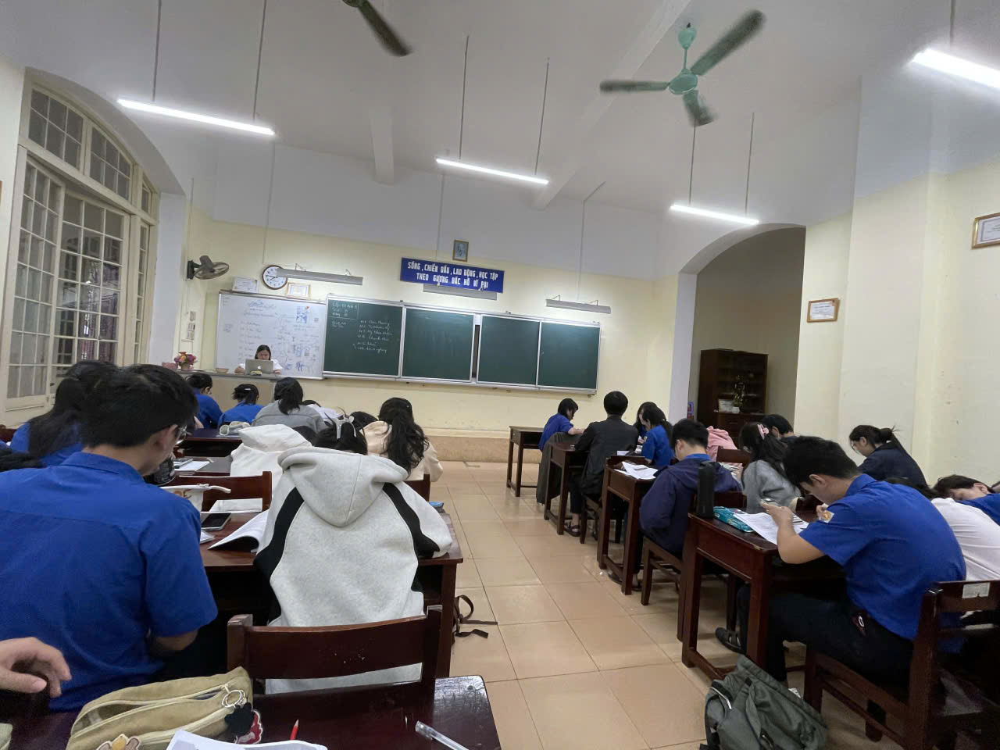

Chào mừng bạn đến với góc nhỏ của 12 Anh 1 – nơi lưu giữ những mảnh ký ức từ những ngày ôn thi miệt mài dưới mái trường Quốc Học đến khoảnh khắc rạng rỡ ngày hái quả ngọt. "Sau cơn mưa" không chỉ là một cái tên, đó là hành trình trưởng thành của chúng mình.
Những ngày giông bão
Những ngày tháng 12 Anh 1 đối mặt với chồng sách vở cao ngất, những đêm thức trắng ôn tập kiểm tra 15 phút, giữa kì, cuối kì hay nỗi lo về kỳ thi tốt nghiệp. Giông bão của chúng mình là những giọt mồ hôi trên giảng đường, là những lúc mệt mỏi muốn bỏ cuộc khi bài toán mãi không tìm ra đáp án, bài văn dù ngồi 30 phút vẫn không viết nổi một chữ... Giông bão ấy còn là những tệp tài liệu tiếng Anh dày cộp, những cấu trúc ngữ pháp "trên trời dưới đất" và danh sách từ vựng dài dằng dặc mà chúng mình phải "thu nạp" mỗi ngày. Có những buổi chiều tà, khi nắng đã tắt trên những dãy hành lang đỏ rực của Quốc Học, lớp 12 Anh 1 vẫn còn đó những gương mặt phờ phạc vì áp lực chạy deadline, vì nỗi lo không chạm tới kỳ vọng của bản thân và gia đình. Những giọt nước mắt đã rơi âm thầm trong ngăn bàn, những tiếng thở dài xen lẫn tiếng lật giấy vội vã trong giờ ra chơi. Chúng mình đã từng hoài nghi về khả năng của chính mình, từng cảm thấy đơn độc giữa biển kiến thức mênh mông, và đôi khi chỉ muốn dừng lại để được thở một nhịp bình yên giữa vòng xoáy thi cử khốc liệt ấy.



Video: Những khoảnh khắc miệt mài bên trang sách của tập thể 12 Anh 1.